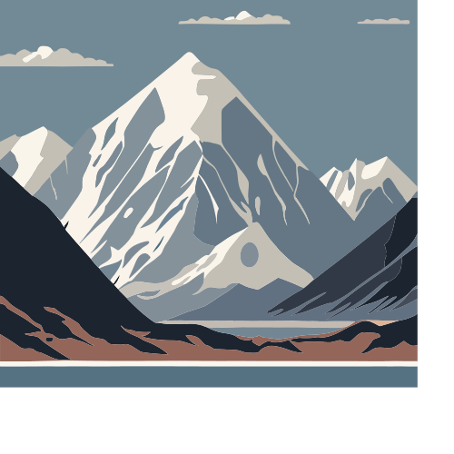
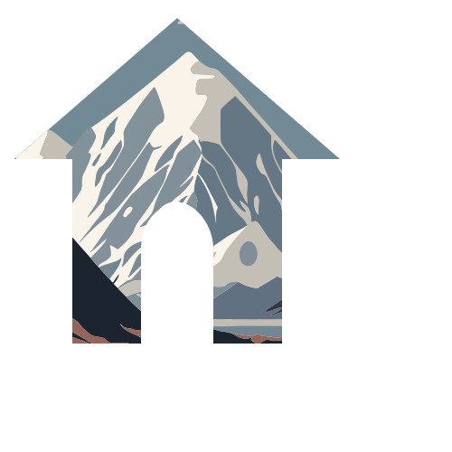

SVG: 참조영역
<refs>영역에는 실제로 객체가 그려지기 이전에 참조할만한 데이터들을 정의합니다. 색, 패턴모양, 끝선 모양, 심볼, 필터, 글꼴을 미리 지정할 수 있습니다. id를 통해 불러옵니다.
| 종류 | 정의 | 호출 |
|---|---|---|
| 채우기 | linearGradient radialGradient |
style='fill="url(#id)' |
| 패턴 | pattern | style='fill="url(#id)' |
| 끝선 모양 | marker | marker-start="ulr(#id)" (*방향: 오른쪽에서 0,0으로) marker-mid="url(#id)" marker-end="url(#id)" |
| 심볼 | symbol | <use xlink:href="#id"> |
| 필터 | filter | style='filler="url(#id)' |
| 글꼴 | style bx:fonts="id" @import url(...) |
style font-family:id; |
| 오리기 | clipPath | clip-path=url("#id") |
채우기
| 그라데이션 종류 | 옵션 |
| linearGradient | 시작점(x1, y1), 끝점(x2, y2) |
| RadialGradient | 중앙점(cx, cy), 초점(fx, fy), 반경(r) |
직선 그라디언트
C_Reference >> linearGradient.svg<defx><linearGradient id="grad_id">...</linearGradient></defx>
<object ... fill="url(#grad_id") />
아래 예제는 2가지 예제를 다루고 있습니다. 시작점(x1, y1)과 끝점(x2, y2)를 이용하여 방향을 결정 할 수 있습니다.
<def>
<!-- 방법 1: -->
<linearGradient id="Gradient1">
<stop class="stop1" offset="0%" />
<stop class="stop2" offset="60%" />
<stop class="stop3" offset="100%" />
</linearGradient>
<style>
<![CDATA[
#rect1 { fill: url(#Gradient1); }
.stop1 { stop-color: red; }
.stop2 { stop-color: black; stop-opacity: 0; }
.stop3 { stop-color: blue; }
]]>
</style>
<!-- 방법 2: -->
<linearGradient id="Gradient2" x1="0" y1="0" x2="1" y2="1">
<stop offset="0" stop-color="red" />
<stop offset="0.4" stop-color="black" stop-opacity="0" />
<stop offset="1" stop-color="blue" />
</linearGradient>
</defs>
<rect id="rect1" x="10" y="10" rx="15" ry="15" width="100" height="100" />
<rect x="10" y="120" rx="15" ry="15" width="100" height="100" fill="url(#Gradient2)" />
<circle cx="170" cy="60" r="50" fill="url(#Gradient1)" />
<circle cx="170" cy="170" r="50" fill="url(#Gradient2)" />
원형 그라디언트
C_Reference >> radialGradient.svg<defx><radialGradient id="grad_id">...</radialGradient></defx>
<object ... fill="url(#grad_id") />
마우스를 올려서 두 그라데이션의 차이를 알아봅니다.(모바일:터치)
<defs>
<radialGradient id="RadialGradient" cx="0.25" cy="0.25" r="0.5">
<stop offset="0%" stop-color="red" />
<stop offset="50%" stop-color="blue" />
<stop offset="100%" stop-color="white" />
</radialGradient>
</defs>
<rect x="10" y="10" rx="15" ry="15" width="200" height="200" fill="url(#RadialGradient)" />
초점 테스트(마우스를 올려서 테스트 해보세요. 모바일:터치)
패턴
정해진 모양을 반복해서 붙여넣는 것을 패턴이라고 합니다.
<svg width="200" height="200"
xmlns="http://www.w3.org/2000/svg">
<defs>
<pattern id="Pattern" x="0" y="0" width=".25" height=".25">
<rect x="0" y="0" width="50" height="50" fill="skyblue" />
<rect x="0" y="0" width="25" height="25" fill="red" />
<circle cx="25" cy="25" r="20" fill="blue" fill-opacity="0.5" />
</pattern>
</defs>
<rect fill="url(#Pattern)" stroke="black" width="200" height="200" />
</svg>끝선
C_Reference >> marker.svg
- ah1은 끝 화살표, ah2는 시작화살표, cir는 원형 끝선을 그립니다.
- marker-start또는 marker-end를 이용해서 시작과 끝을 불러옵니다.
- 화살표의 방향은 path의 방향에 맞춰서 자동으로 그려줍니다.(오른쪽 화살표(3개)참조)
<marker id="ah1" markerWidth="20" markerHeight="20" viewBox="0 0 20 10" orient="auto">
<path d="M9 0L0 4 0 -4 z" />
</marker>
<marker id="ah2" markerWidth="20" markerHeight="20" viewBox="0 0 20 10" orient="auto">
<path d="M0 0L9 4 9 -4z" />
</marker>
<marker id="cir" viewBox="-5 -5 10 10" markerWidth="5" markerHeight="5">
<ellipse style="fill:black;stroke:none" cx="0" cy="0" rx="5" ry="5"></ellipse>
</marker>
<path marker-end="url(#ah1)" d="M10 20 h100" style="fill:none;stroke:#000" />
<path marker-start="url(#ah1)" d="M10 50 h100" style="fill:none;stroke:#000" />
<path marker-start="url(#ah2)" d="M10 80 h100" style="fill:none;stroke:#000" />
<path marker-start="url(#ah2)" marker-end="url(#ah1)" d="M10 110 h100" style="fill:none;stroke:#000" />
<path marker-start="url(#cir)" marker-end="url(#ah1)" d="M10 140 h100" style="fill:none;stroke:#000" />심볼
C_Reference >> symbol.svg한 번 저장한 경로를 두고두고 가져올 수 있습니다.
<defs>
<symbol id="symbol-0" viewBox="0 0 100 100" bx:pinned="true">
<path style="stroke-linecap: round; stroke-linejoin: round; stroke-width: 8px;"
d="M 20 95 L 20 44 L 4 44 L 49 5 L 94 44 L 78 44 L 78 95 L 59 95 L 59 69 C 59 59 49 52 44 58 C 41 60 39 64 39 69 L 39 95 L 20 95 Z" />
</symbol>
</defs>
<use width="100" height="100" xlink:href="#symbol-0" transform="matrix(2, 0, 0, 2, 270, 185)"
style="mix-blend-mode: difference; fill:red; stroke:red" />
<use width="100" height="100" xlink:href="#symbol-0" transform="matrix(1, 0, 0, 1, 227, 158)"
style="mix-blend-mode: difference; fill:orange; stroke:orange" />
<use width="100" height="100" xlink:href="#symbol-0" transform="matrix(1, 0, 0, 1, 207, 100)"
style="mix-blend-mode: difference; fill:yellow; stroke:yellow" />
<use width="100" height="100" xlink:href="#symbol-0" transform="matrix(1, 0, 0, 1, 60, 109)"
style="mix-blend-mode: difference; fill:green; stroke:green" />
<use width="100" height="100" xlink:href="#symbol-0" transform="matrix(1, 0, 0, 1, 376, 138)"
style="mix-blend-mode: difference; fill:blue; stroke:blue" />
<use width="100" height="100" xlink:href="#symbol-0" transform="matrix(2, 0, 0, 2, 136, 155)"
style="mix-blend-mode: difference; fill:purple; stroke:purple" />
<use width="100" height="100" xlink:href="#symbol-0" transform="matrix(3, 0, 0, 3, -31, 176)"
style="mix-blend-mode: difference; fill:white; stroke:gray" />
<use width="100" height="100" xlink:href="#symbol-0" transform="matrix(1, 0, 0, 1, 264, 60)"
style="mix-blend-mode: difference; fill:black; stroke:black" />
필터
C_Reference >> filter.svg<rect x="0" y="10" rx="18" ry="18" width="80" height="65" style="fill:url(#rainbow); stroke: #000;"/>
<rect x="100" y="10" rx="18" ry="18" width="80" height="65" style="fill:url(#rainbow); stroke: #000; filter:blur(5px);" />글꼴
C_Reference >> font.svg글꼴을 link이외에 embed로 삽입 할 수 있습니다. 파일 용량이 무의미하게 커지는 이유와, 핸드컨트롤이 어렵다는 이유로 생략합니다.
<defs>
<style bx:fonts="ABeeZee" bx:pinned="true">@import url(https://fonts.googleapis.com/css2?family=ABeeZee%3Aital%2Cwght%400%2C400%3B1%2C400&display=swap);</style>
</defs>
<text style="fill: rgb(51, 51, 51); font-family: ABeeZee; font-size: 16.7px; white-space: pre;" x="100" y="215" transform="matrix(2, 0, 0, 5, -113, -824)">This is a ABeeZee.</text>오리기
C_Reference >> clipPath.svg원본의 그림을 원하는 부분만 출력 할 수 있습니다.


https://pixabay.com/vectors/mountains-landscape-nature-travel-8314422/
Uploader: insspirito
License: Pixbay License
Uploader: insspirito
License: Pixbay License
<svg width="40%" viewbox="0 0 210 110" version="1.1" xmlns="http://www.w3.org/2000/svg" xmlns:xlink="http://www.w3.org/1999/xlink">
<defs>
<clipPath id="cut-off-bottom">
<rect x="0" y="0" width="200" height="100" />
</clipPath>
</defs>
<circle cx="100" cy="100" r="100" clip-path="url(#cut-off-bottom)" />
</svg>
circle은 반지름이 100인 원을 그리는것이지만, clipPath를 이용하여, 200 x 100으로 잘랐습니다.